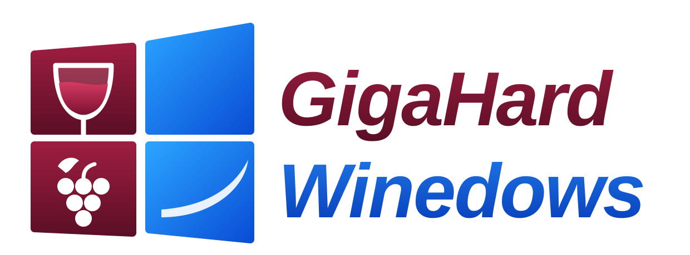
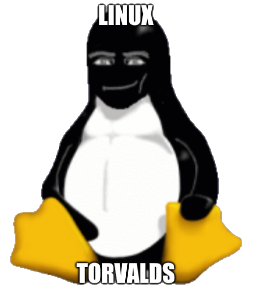

GigaHard Winedows is a Linux desktop dressed as W*ndows. Double-click any .exe and it runs, because Win32 turned out to be the stable ABI on Linux.

Any .exe or .msi opens through Wine. No prompts, no terminal, no "which distro?".
Taskbar, Start-style menu, This PC and Recycle Bin, on a Cinnamon desktop.
Firefox under the hood, branded Edgy, and it tells every website it is Edge.
apt has been removed. Software arrives the traditional way: as an installer you found somewhere.
Share of ten-year-old programs that still start when you double-click them. Higher is better.
| Platform | Result | Notes |
|---|---|---|
| Ubuntu, native Linux binaries | 23% | "error while loading shared libraries: libpng12.so.0" |
| Ubuntu, "just recompile it" | 41% | Which distro? Which glibc? Which Qt? |
| GigaHard Winedows, Win32 binaries | 100% | Double-click, it runs. |
Methodology: we double-clicked things. Inspired by "Win32 is the only stable ABI on Linux". It is funny because it is true.

"It runs the .exe. I have no further comments."
SHA256SUMS.dd, or Rufus in DD mode). Login is automatic.qemu-system-x86_64 -enable-kvm -m 4096 -cdrom winedows.iso
If the download is split into parts, join them first: cat winedows-*.iso.part* > winedows.iso
Debian 13 "trixie", Cinnamon, Firefox ESR and Wine, assembled with live-build. apt is purged in the final build step. Source and issues on GitHub.